Contents
% Simply run this file section by section to see the results that we have to show. % % See html/ for a published version of this document. % % Use the line with solve_poisson_equation_color instead of solve_poisson_equation2_color % to see Gauss-Seidel intermediate steps. This converges much worse. addpath('Implementation')
1. Solving the poisson equation
See solve_poisson_equation(_color) and solve_poisson_equation2(_color).
The solve_poisson_equation*2* variant solves the sparse linear least squares system directly rather than using Gauss Seidel and is therefore much faster. But it does not have pretty intermediate steps.
As for solve_poisson_equation2: I think my equation system is a bit too big - I could combine the constraints for the laplacian into one row instead of having one row for each directional derivative.
2. Example of seamless cloning
close all % --- Selection of dataset --- a = 'seamless_background1_Downsampled.jpg'; b = 'seamless_foreground1_Downsampled.jpg'; c = 'seamless_mask1_Downsampled.jpg'; f = 0.25; % * cuz otherwise the moon comes out too bright ;) %a = 'seamless_background1.jpg'; b = 'seamless_foreground1.jpg'; c = 'seamless_mask1.jpg'; f = 0.5; % % --- target=imread8toDouble('seamless_background1_Downsampled.jpg'); source=imread8toDouble('seamless_foreground1_Downsampled.jpg') * f; mask=imread8toDoubleGrayscale('seamless_mask1_Downsampled.jpg') > 0.5; show_image_in_figure(target, 'Seamless cloning target image'); show_image_in_figure(source, 'Seamless cloning source image'); show_image_in_figure(mask, 'Seamless cloning mask, white -> source, black -> target'); cp = []; for i=1:3 cp(:,:,i) = immask_combine(target(:,:,i), source(:,:,i), mask); end show_image_in_figure(cp, 'Seamless cloning: Crude cut-and-paste for comparison'); % Compute gradients grad_target = forward_differences2_list_color(target); grad_source = forward_differences2_list_color(source); rmask = most(mask); gradients = grad_target; for i=1:3 % each channel for j = 1:2 % each partial derivative gradients(:,:,j,i) = immask_combine(grad_target(:,:,j,i), grad_source(:,:,j,i), rmask); % Use grad_source where mask is 1 end end % Ready to call solve_poisson_equation_color output = solve_poisson_equation2_color(target, gradients, mask); %output = solve_poisson_equation_color(target, gradients, mask, 100); show_image_in_figure(output, 'Seamless cloning: Poisson reconstruction result');
color channel 1 solve poisson equation2: building equation system... calling least_squares_for... least_squares_for preparation...526470 least_squares_for solving 534041 7377, sparse?: 1 reshaping the result... done color channel 2 solve poisson equation2: building equation system... calling least_squares_for... least_squares_for preparation...526470 least_squares_for solving 534041 7377, sparse?: 1 reshaping the result... done color channel 3 solve poisson equation2: building equation system... calling least_squares_for... least_squares_for preparation...526470 least_squares_for solving 534041 7377, sparse?: 1 reshaping the result... done
 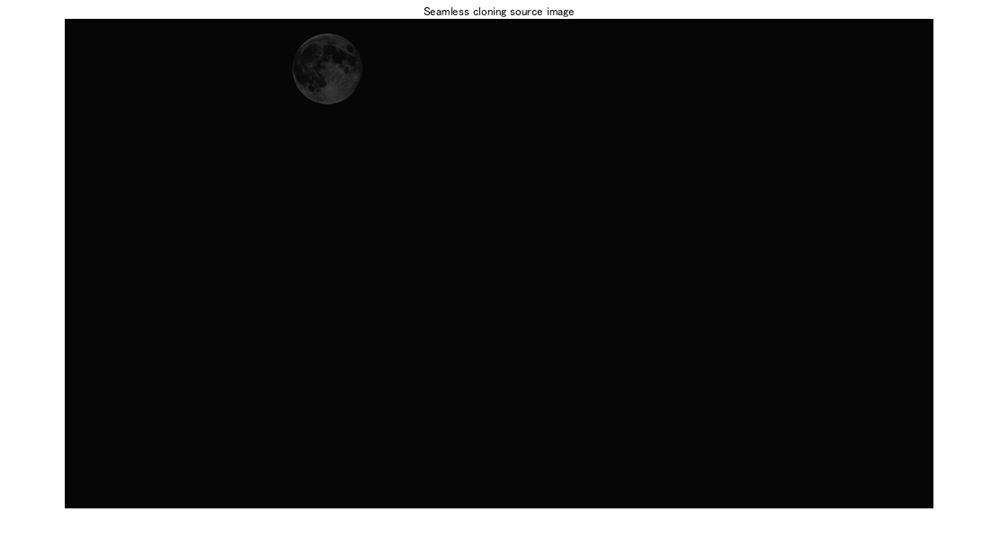 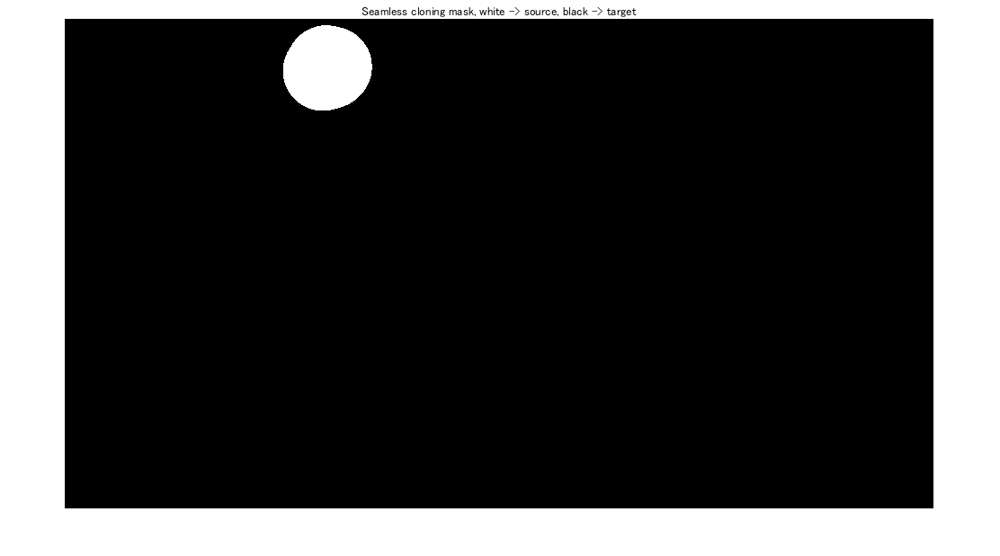 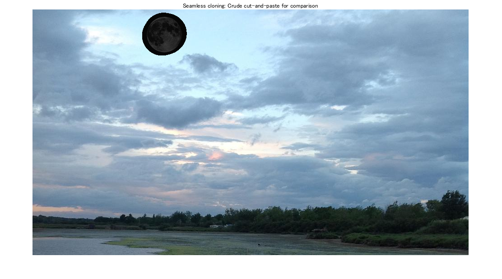 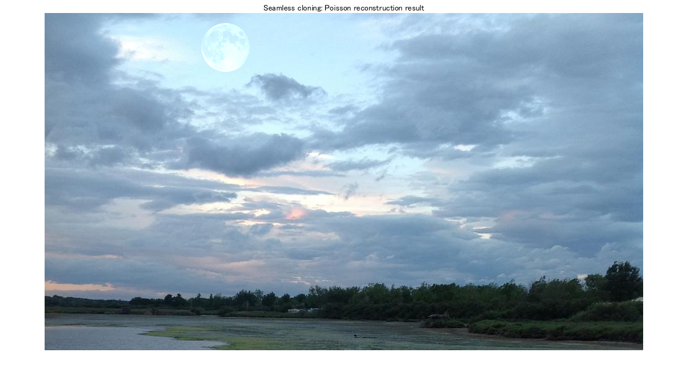
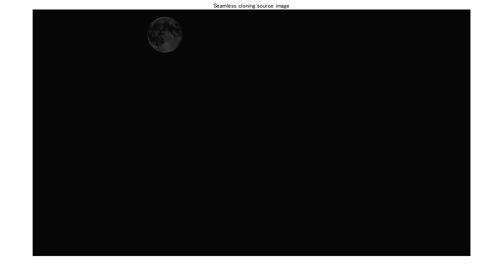 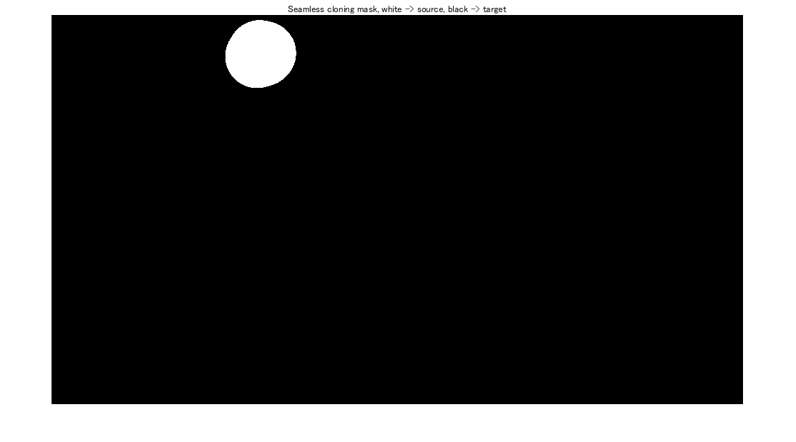 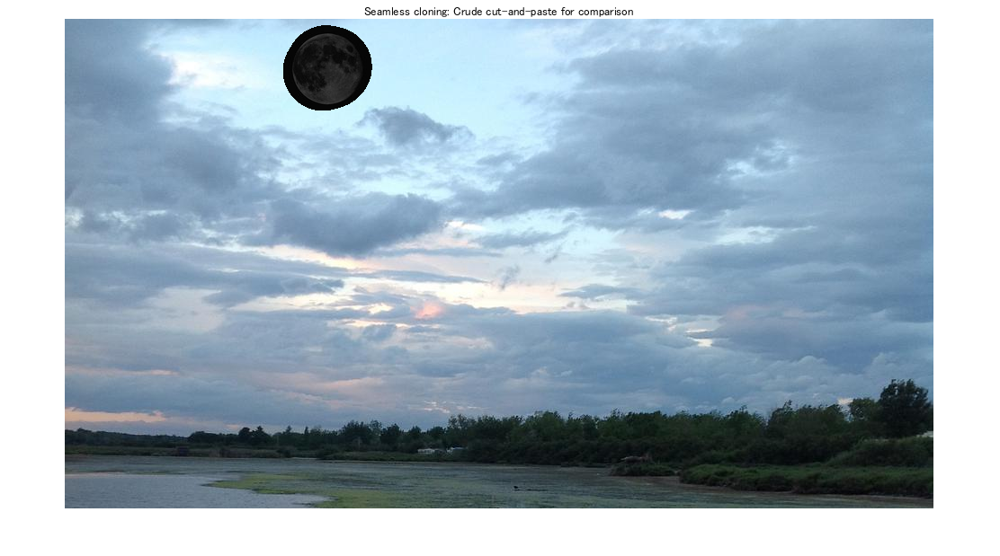 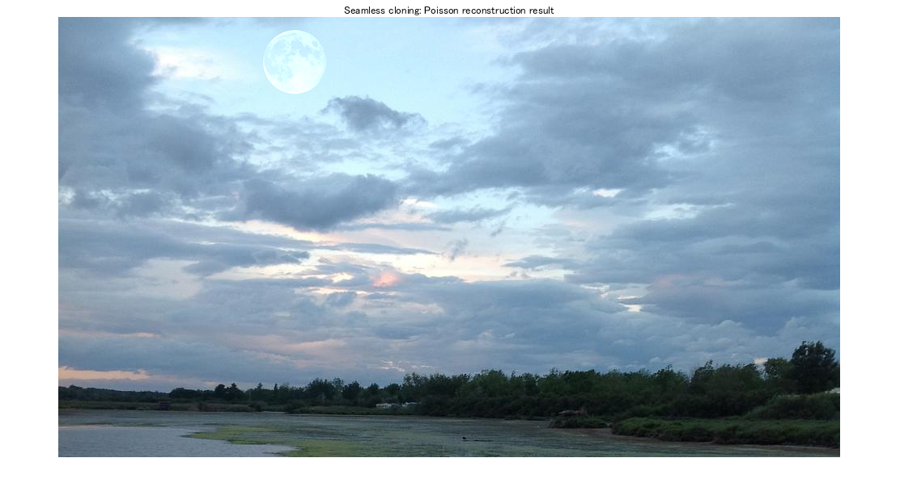 3. Example of gradient mixing
close all % the order of these images is important given the mask (colors might be weird if swapped) a = imread8toDouble('gradientmixB1.png'); % gradientmixC2 gradientmix1 gradientmixB1 b = imread8toDouble('gradientmixB2.png'); % gradientmixC1 gradientmix2 gradientmixB2 show_image_in_figure(a, 'Gradient mixing: Background'); show_image_in_figure(b, 'Gradient mixing: Foreground'); ag = forward_differences2_list_color(a); bg = forward_differences2_list_color(b); % for gradientmix1|gradientmix2 pair %mask = imread8toDoubleGrayscale('gradientmix_mask.png') > 0.5; % everything but the boundary mask = zeros(size(a,1),size(a,2)); mask(2:end-1, 2:end-1) = 1; mask = mask == 1; g = []; % component-wise for d=1:2 for c=1:3 b_larger_mask = abs(bg(:,:,d,c)) > abs(ag(:,:,d,c)); % mask which is true when b is larger in magnitude g(:,:,d,c) = immask_combine(ag(:,:,d,c),bg(:,:,d,c),b_larger_mask); % this is not the same: max(ag(:,:,d,c), bg(:,:,d,c)); end end output = solve_poisson_equation2_color(a, g, mask); %output = solve_poisson_equation_color(a, g, mask,100); % this takes much too long show_image_in_figure(output, 'Gradient mixing: Poisson reconstruction result');
color channel 1 solve poisson equation2: building equation system... calling least_squares_for... least_squares_for preparation...374904 least_squares_for solving 748562 372416, sparse?: 1 reshaping the result... done color channel 2 solve poisson equation2: building equation system... calling least_squares_for... least_squares_for preparation...374904 least_squares_for solving 748562 372416, sparse?: 1 reshaping the result... done color channel 3 solve poisson equation2: building equation system... calling least_squares_for... least_squares_for preparation...374904 least_squares_for solving 748562 372416, sparse?: 1 reshaping the result... done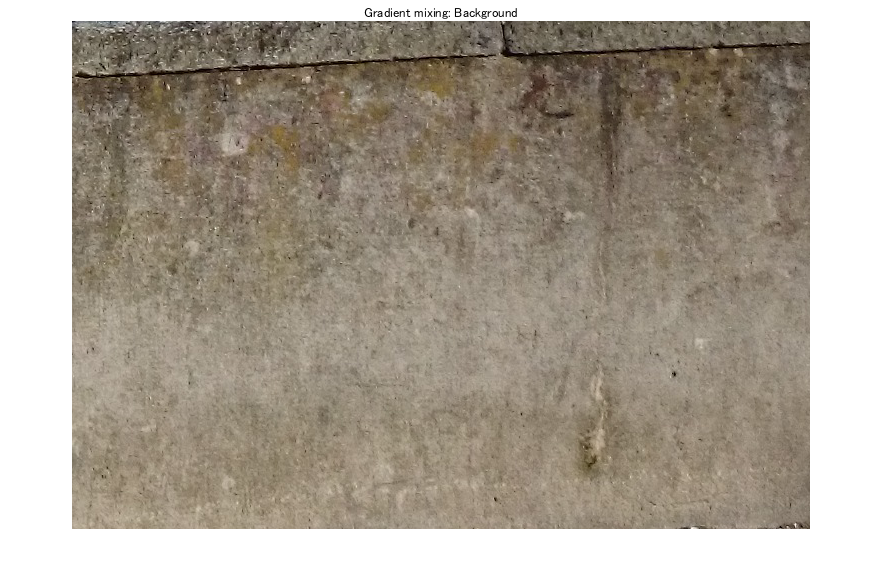 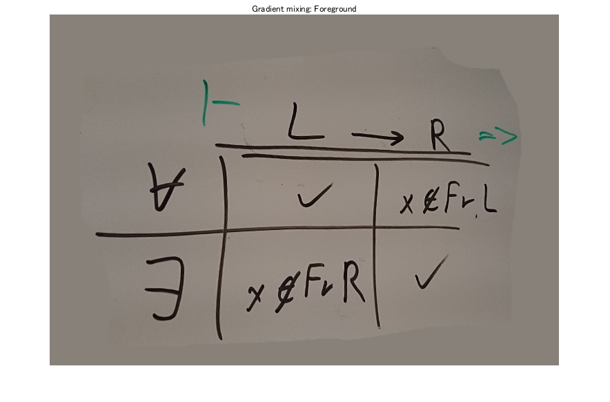 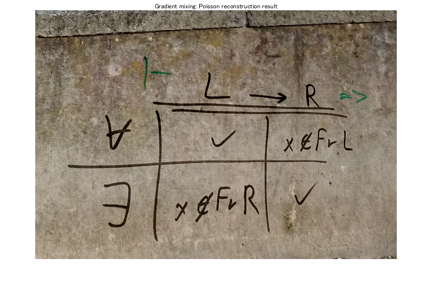
4. Example of hightlight removal
I was not quite sure how to apply the transformation suggested in the slides in the log domain.
So I developed a simple transformation which just downscales large gradients and leaves small ones unchanged. I think the results are similar.
close all a = imread8toDouble('highlightremoval1.jpg'); % HighlightRemovalTarget.png highlightremoval1.jpg g = forward_differences2_list_color(a); mask = imread8toDoubleGrayscale('highlightremoval1_mask.png') > 0.5; % for highlightremoval1 %mask = imread8toDoubleGrayscale('HighlightRemovalMask.png') < 0.5; % for HighlightRemovalTarget show_image_in_figure(a, 'Hightlight removal: Image'); show_image_in_figure(mask, 'Hightlight removal: Mask'); show_image_in_figure(rescale01(g(:,:,1,2)), 'Hightlight removal: Gradients before compression'); % compress within mask for c=1:3 for y=1:imageHeight(a) for x=1:imageWidth(a) if mask(y,x) g(y,x,:,c) = fake_gamma_compression(g(y,x,:,c), 0.1);%0.5 * g(y,x,:,c);%fake_gamma_compression(g(y,x,:,c), sqrt(2)/2); end end end end show_image_in_figure(rescale01(g(:,:,1,2)), 'Hightlight removal: Gradients after compression'); % reconstruct sol = solve_poisson_equation2_color(a,g,mask); %sol = solve_poisson_equation_color(a,g,mask,100); show_image_in_figure(sol, 'Hightlight removal: Poisson reconstruction result');
color channel 1 solve poisson equation2: building equation system... calling least_squares_for... least_squares_for preparation...272640 least_squares_for solving 278981 6054, sparse?: 1 reshaping the result... done color channel 2 solve poisson equation2: building equation system... calling least_squares_for... least_squares_for preparation...272640 least_squares_for solving 278981 6054, sparse?: 1 reshaping the result... done color channel 3 solve poisson equation2: building equation system... calling least_squares_for... least_squares_for preparation...272640 least_squares_for solving 278981 6054, sparse?: 1 reshaping the result... done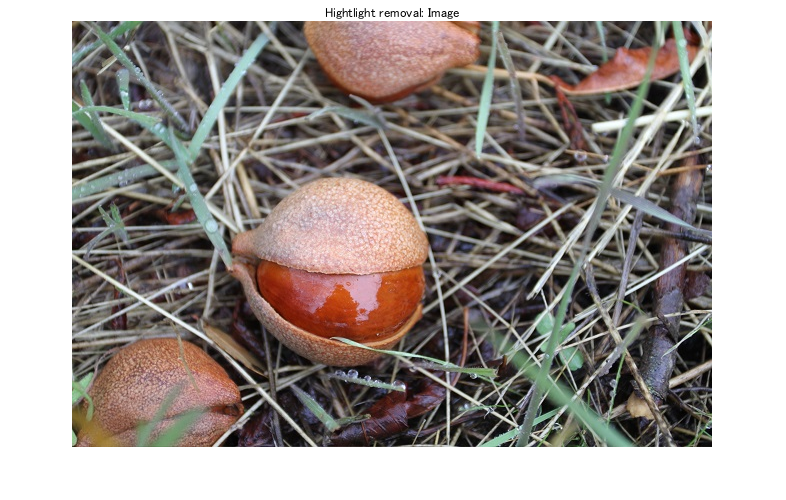 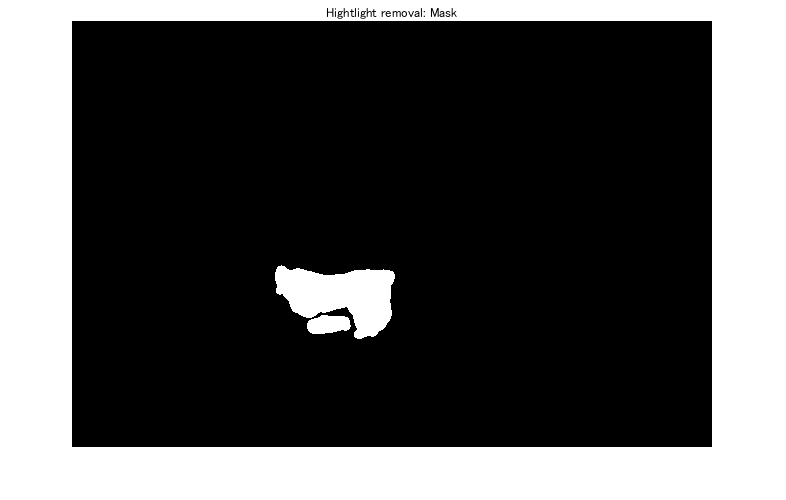 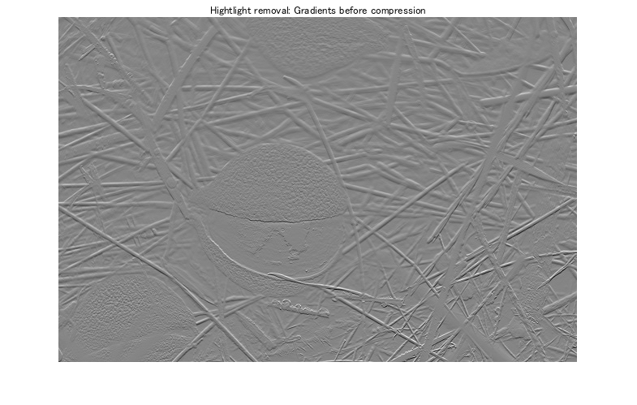 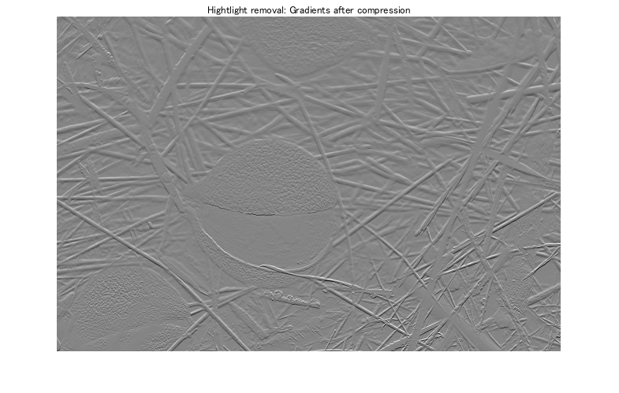 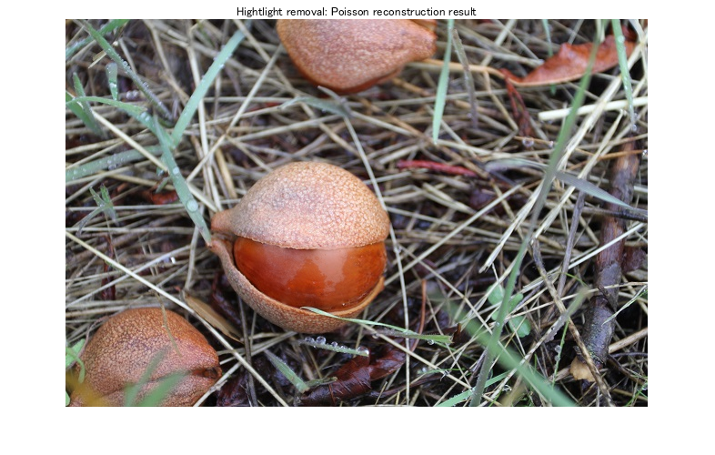